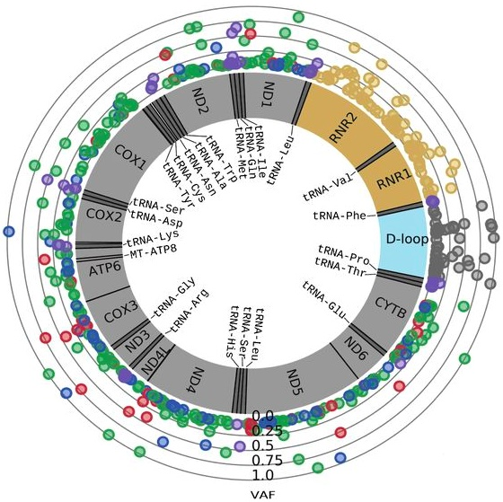

Publications
Sensory input, sex and function shape hypothalamic cell type developmentHarris S Kaplan, Brandon L Logeman, Kai Zhang, Tate A Yawitz, Celine Santiago, Noor Sohail, Mustafa Talay, Changwoo Seo, Serhiy Naumenko, Shannan J Ho Sui, David D Ginty, Bing Ren, Catherine Dulac Nature (2025) |
|
SEACells infers transcriptional and epigenomic cellular states from single-cell genomics dataSitara Persad, Zi-Ning Choo, Christine Dien, Noor Sohail, Ignas Masilionis, Ronan Chaligné, Tal Nawy, Chrysothemis C. Brown, Roshan Sharma, Itsik Pe’er, Manu Setty, Dana Pe’er Nature Biotechnology (2023) |
|
MACHETE identifies interferon-encompassing chromosome 9p21.3 deletions as mediators of immune evasion and metastasisFrancisco M. Barriga, Kaloyan M. Tsanov, Yu-Jui Ho, Noor Sohail, Amy Zhang, Timour Baslan, Alexandra N. Wuest, Isabella Del Priore, Brigita Meškauskaitė, Geulah Livshits, Direna Alonso-Curbelo, Janelle Simon, Almudena Chaves-Perez, Dafna Bar-Sagi, Christine A. Iacobuzio-Donahue, Faiyaz Notta, Ronan Chaligne, Roshan Sharma, Dana Pe’er, Scott W. Lowe. Nature Cancer (2022) |
|
Overcoming Challenging Substituent Perturbations with Multisite λ-Dynamics: A Case Study Targeting β-Secretase 1Jonah Z. Vilseck, Noor Sohail, Ryan L. Hayes, and Charles L. Brooks III. The Journal of Physical Chemistry Letters (2019) |
|
|  |
Landscape of Germline and Somatic Mitochondrial DNA Mutations in Pediatric MalignanciesPetr Triska, Kristiyana Kaneva, Daria Merkurjev, Noor Sohail, Marni J. Falk, Timothy J. Triche Jr, Jaclyn A. Biegel, Xiaowu Gai. Cancer Research (2019) |